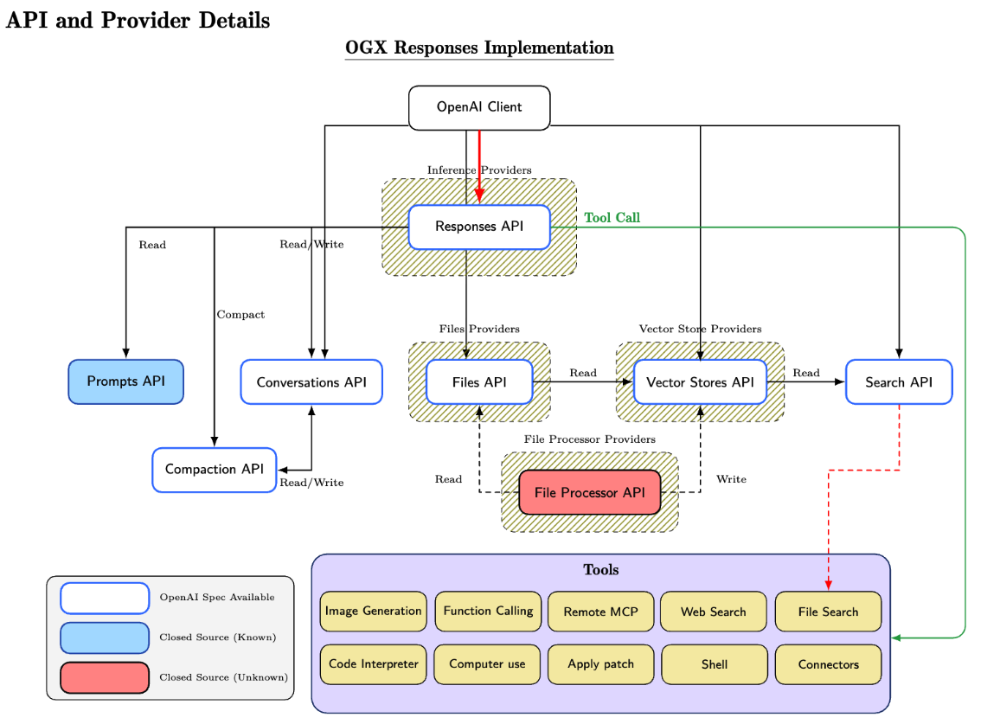

vLLM Agentic API
Responses and Messages protocols, state, streaming, and gateway-owned tool execution.
llm-d community demo
Claude Code and Codex running on vLLM through llm-d and the vLLM Agentic API.
● WORKING DEMO / Responses + Messages / server-side web search
Francisco Javier ArceoSenior Principal Software Engineer · Red Hat AI
Three projects · one agentic path
Responses and Messages protocols, state, streaming, and gateway-owned tool execution.
Kubernetes-native routing and distributed inference orchestration above model servers.
High-throughput inference and the model-facing OpenAI-compatible contract.
The seam stays inference-provider neutral: harness behavior and tools do not need to move with the model backend. One API—from a single local node to distributed Kubernetes.
PROJECT GOALWhy Agentic API?
Conversations, reasoning, and tool state persist across turns.
Web search, MCP, and other tools re-enter the same response loop.
State CRUD and tool execution belong in the Agentic API; vLLM remains focused on token generation.

Demo architecture
Both harnesses called Agentic API. On CoreWeave, Agentic API called one vLLM pod through a direct in-cluster Service.
Protocol translation
response orchestration
streaming + continuation
Live demo
Ask for a coding task that needs current web research.
The model selects the web search tool mid-response.
Agentic API executes it and continues inference through llm-d.
Switch from Claude Code to Codex. The stack stays put.
What we actually ran
Next: disaggregated Responses
The response lifecycle becomes its own scalable system.
State, memory, streaming, tool loops, approvals, continuation.
llm-d routes across vLLM today, with a neutral seam for other providers.
Replayable trajectories, evaluations, and eventually RL environments.
Come build the missing surface
Keep the harness, agent loop, and tools inference-provider neutral. Make open models a first-class target for real agentic workloads.